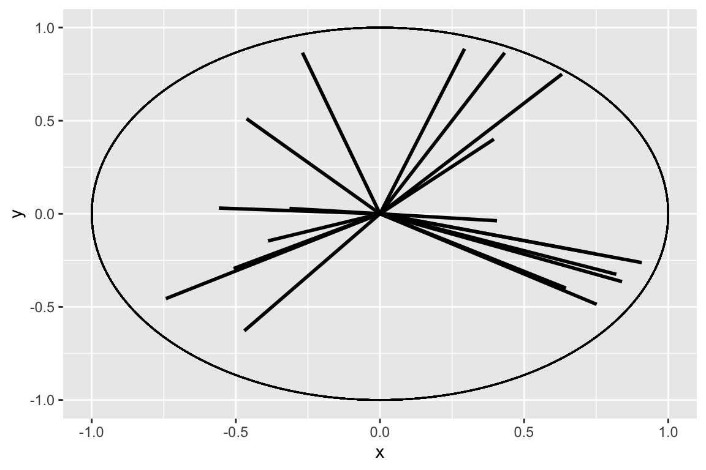
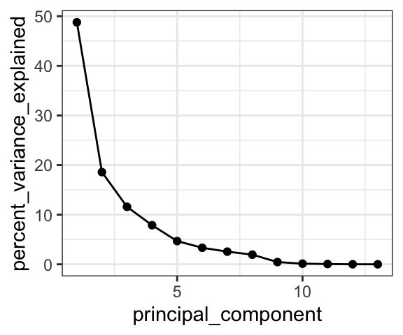

Chapter 12 PCA
There is another way to look at our data in a cluster context - i.e. another way to identify clusters of samples that have similar properties based on the analytes in the data set. This method is called k-means, which we will look at later, because for it we first need to have a look at dimensionality reduction techniques, particularly principal components analysis (PCA).
12.1 PCA
PCA looks at all the variance in a high dimensional data set and chooses new axes within that data set that align with the directions containing highest variance. These new axes are called principal components. Let’s look at an example:

In the example above, the three dimensional space can be reduced to a two dimensional space with the principal components analysis. New axes (principal components) are selected (bold arrows on left) that become the x and y axes in the principal components space (right).
We can run and visualize principal components analyses using the runMatrixAnalysis() function as in the example below:
source("https://thebustalab.github.io/R_For_Chemists/custom_functions/chem.R")
AK_lakes <- read_csv("https://thebustalab.github.io/R_For_Chemists/sample_data/alaska_lake_data.csv")
head(AK_lakes)
## # A tibble: 6 x 7
## lake park water_temp pH element mg_per_L element_type
## <chr> <chr> <dbl> <dbl> <chr> <dbl> <chr>
## 1 Devil_Mountain_Lake BELA 6.46 7.69 C 3.4 bound
## 2 Devil_Mountain_Lake BELA 6.46 7.69 N 0.028 bound
## 3 Devil_Mountain_Lake BELA 6.46 7.69 P 0 bound
## 4 Devil_Mountain_Lake BELA 6.46 7.69 Cl 10.4 free
## 5 Devil_Mountain_Lake BELA 6.46 7.69 S 0.62 free
## 6 Devil_Mountain_Lake BELA 6.46 7.69 F 0.04 free
AK_lakes_pca <- runMatrixAnalysis(
data = AK_lakes,
analysis = c("pca"),
column_w_names_of_multiple_analytes = "element",
column_w_values_for_multiple_analytes = "mg_per_L",
columns_w_values_for_single_analyte = c("water_temp", "pH"),
columns_w_additional_analyte_info = "element_type",
columns_w_sample_ID_info = c("lake", "park")
)
## Not replacing any NAs in your data set
library(ggrepel)
ggplot(data = AK_lakes_pca, aes(x = Dim.1, y = Dim.2)) +
geom_point(aes(fill = park), shape = 21, size = 4, alpha = 0.8) +
geom_label_repel(aes(label = lake), alpha = 0.5) +
theme_classic()
Great! In this plot we can see that White Fish Lake and North Killeak Lake, both in BELA park, are quite different from the other parks (they are separated from the others along dimension 1, i.e. the first principal component). At the same time, Wild Lake, Iniakuk Lake, Walker Lake, and several other lakes in GAAR park are different from all the others (they are separated from the others along dimension 2, i.e. the second principal component).
Important question: what makes the lakes listed above different from the others? Certainly some aspect of their chemistry, since that’s the data that this analysis is built upon, but how do we determine which analyte(s) are driving the differences among the lakes that we see in the PCA plot?
12.2 Drivers of PCA dimensions
Let’s look at how to access the information about which analytes are major contributors to each principal component. This is important because it will tell you which analytes are associated with particular dimensions, and by extension, which analytes are associated with (and are markers for) particular groups in the PCA plot. This can be determined using an ordination plot. Let’s look at an example. We can obtain the ordination plot information using runMatrixAnalysis() with analysis = "pca-ord":
## Not replacing any NAs in your data set
## # A tibble: 6 x 3
## analyte Dim.1 Dim.2
## <chr> <dbl> <dbl>
## 1 water_temp 0.0769 -0.267
## 2 pH 0.704 0.0190
## 3 C 0.297 -0.248
## 4 N 0.00446 0.732
## 5 P 0.485 -0.0817
## 6 Cl 0.978 0.0152We can now visualize the ordination plot using our standard ggplot plotting techniques. Note the use of geom_label_repel() and filter() to label certain segments in the ordination plot. You do not need to use geom_label_repel(), you could use the built in geom_label(), but geom_label_repel() can make labelling your segments easier.
source("https://thebustalab.github.io/R_For_Chemists/custom_functions/chem.R")
AK_lakes_pca_ord <- runMatrixAnalysis(
data = AK_lakes,
analysis = c("pca-ord"),
column_w_names_of_multiple_analytes = "element",
column_w_values_for_multiple_analytes = "mg_per_L",
columns_w_values_for_single_analyte = c("water_temp", "pH"),
columns_w_additional_analyte_info = "element_type",
columns_w_sample_ID_info = c("lake", "park")
)
library(ggforce) # Gives access to geom_circle
library(ggrepel) # Gives access to geom_label_repel
head(AK_lakes_pca_ord)
## # A tibble: 6 x 3
## analyte Dim.1 Dim.2
## <chr> <dbl> <dbl>
## 1 water_temp 0.0769 -0.267
## 2 pH 0.704 0.0190
## 3 C 0.297 -0.248
## 4 N 0.00446 0.732
## 5 P 0.485 -0.0817
## 6 Cl 0.978 0.0152
ggplot(AK_lakes_pca_ord) +
geom_segment(aes(x = 0, y = 0, xend = Dim.1, yend = Dim.2, color = analyte), size = 1) +
geom_circle(aes(x0 = 0, y0 = 0, r = 1)) +
geom_label_repel(
data = filter(AK_lakes_pca_ord, Dim.1 > 0.9, Dim.2 < 0.1, Dim.2 > -0.1),
aes(x = Dim.1, y = Dim.2, label = analyte), xlim = c(1,1.5)
) +
geom_label_repel(
data = filter(AK_lakes_pca_ord, Dim.2 > 0.5),
aes(x = Dim.1, y = Dim.2, label = analyte), direction = "y", ylim = c(1,1.5)
) +
coord_cartesian(xlim = c(-1,1.5), ylim = c(-1,1.5)) +
theme_bw()
Great! With this ordination plot we can now see that the abundances of K, Cl, Br, and Na are the major contributors of variance to the first principal component (or the first dimension). The abundances of these elements are what make White Fish Lake and North Killeak Lake different from the other lakes. We can also see that the abundances of N, S, and Ca are the major contributors to variance in teh second dimension, whic means that these elements ar what set Wild Lake, Iniakuk Lake, Walker Lake, and several other lakes in GAAR park apart from the rest of the lakes in the data set.
12.3 Comparing principal components
We also can access information about the how much of the variance in the data set is explained by each principal component:
AK_lakes_pca_ord <- runMatrixAnalysis(
data = AK_lakes,
analysis = c("pca-dim"),
column_w_names_of_multiple_analytes = "element",
column_w_values_for_multiple_analytes = "mg_per_L",
columns_w_values_for_single_analyte = c("water_temp", "pH"),
columns_w_additional_analyte_info = "element_type",
columns_w_sample_ID_info = c("lake", "park")
)
## Not replacing any NAs in your data set
head(AK_lakes_pca_ord)
## # A tibble: 6 x 2
## principal_component percent_variance_explained
## <dbl> <dbl>
## 1 1 48.8
## 2 2 18.6
## 3 3 11.6
## 4 4 7.88
## 5 5 4.68
## 6 6 3.33And we can now plot that using ggplot:
ggplot(
data = AK_lakes_pca_ord,
aes(x = principal_component, y = percent_variance_explained)
) +
geom_line() +
geom_point() +
theme_bw()
Cool! We can see that the first principal component retains nearly 50% of the variance in the original dataset, while the second dimension contains only about 20%.